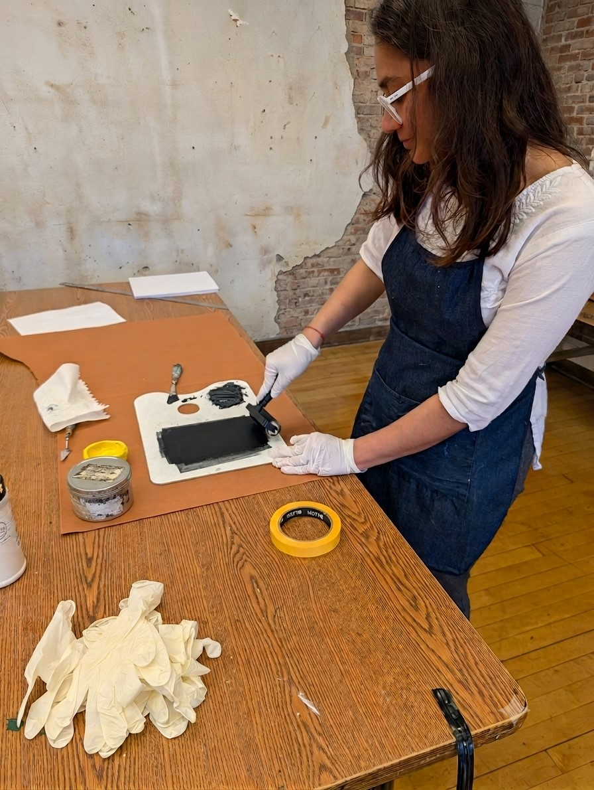

Anvi Stevens is a visual artist whose works range from small handheld to large scale painting, drawing, sculptural and textile works. She grew up in Gujarat, India, and currently lives and works in Wakefield, Massachusetts.
She received a Bachelor of Visual Arts from Maharaja Sayajiroa University of Vadodara, India and a Master of Fine Arts from Boston University. Fabric, often acquired from her mother’s collection, serve as surfaces to dye and paint on. Through hand and machine stitching, and mark making techniques, Anvi uses abstraction to navigate the awkward, complex, and humorous experiences in a social setting that lead to growth and transformation.
Anvi’s current body of work depicts chairs as vessels of personification, within imagined, represented, and/or constructed interior spaces. Inspired by the symbolic character of various natural and decorative objects from her mental, photographed, or physical collection she explores the historical and psychological weight carried by individuals in social situations.
Statement
My current body of work ponders on the unseen psychological weight people may carry. In a group setting, the body conforms to a bifurcating frame of mind - innate and presented. My work explores the tension between the two phases of self and the overlap of shared experiences. I use chairs to ground the ‘nature of being’ to physical existence.
The abstract and fragmented memories of rituals performed, either once or as a tradition, are vesseled within the movements around the space and the involved furnishings. Sometimes it emerges as residual arrangement of furniture after a social gathering, proximity of a relationship in retrospective contemplation, or humorous representation of psychological projection. Through arrangement and assemblage, I materialize belonging and inclusion in social nuances, transparent or layered.
The edges of the fabric come together like a slight brush of skin, generating an unexpected sense of tactility between materials, patterns, and marks. A scene is staged as it draws in a gaze. Movement is perceived.
The fictional history depicted in the spaces I construct, retain the ‘real’ history possessed by various textiles incorporated from my mother’s collection, acquisitions from antique stores, as well as used clothing. They undergo processes of dyeing, eco printing, stitching, applique, painting, mark making, drawing, and embroidery creating an illusory dreamscape, recalled privately.
‘Nature of being' is observed in the symbolic ‘nature of things’ carried by the chairs. The subject of my paintings, the chairs, are vessels of personification while providing the comfort and familiarity a place of rest evokes.